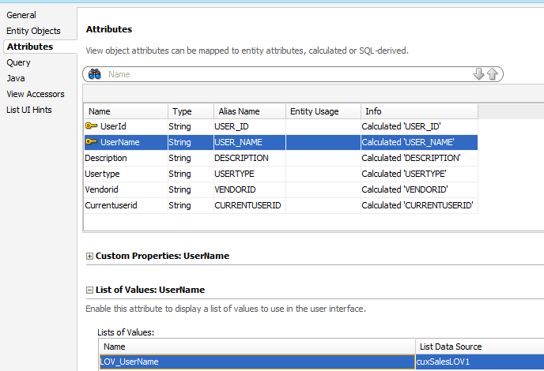
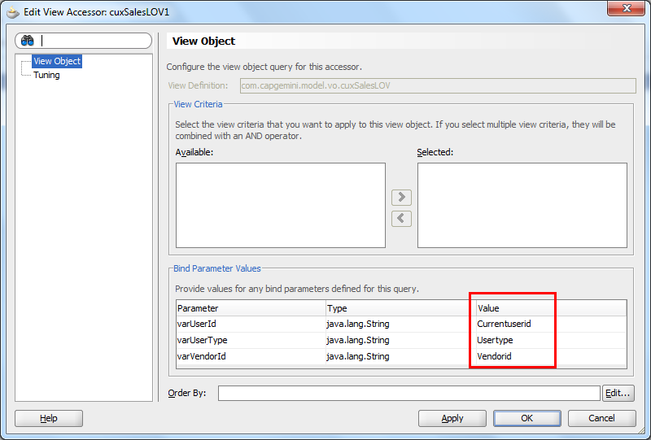

需求：
LOV的值集需要根据传入的用户角色类型(A,B,C)动态改变，A时查询所有，B时过滤字段1，C时过滤字段2.
基础VO的SQL如下:
1
2
3
4
5
6
7
8
9
| SELECT DISTINCT U.USER_ID, U.USER_NAME, F.FULL_NAME AS DESCRIPTION
FROM FND_USER U, PO_HEADERS_ALL P, PO_VENDORS V, PER_PEOPLE_F F
WHERE U.EMPLOYEE_ID = P.AGENT_ID
AND P.VENDOR_ID = V.VENDOR_ID
AND F.PERSON_ID(+) = U.EMPLOYEE_ID
AND P.APPROVED_FLAG = 'Y'
AND ((P.VENDOR_ID = :VARVENDORID AND :VARUSERTYPE = 'B') OR
(:VARUSERTYPE = 'A') OR
(:VARUSERTYPE = 'C' AND U.USER_ID = :VARUSERID))
|
创建VARUSERTYPE VARUSERID VARVENDORID 三个绑定变量。
创建LOV VO
LVO的SQL如下:
1
2
3
4
5
6
7
| SELECT NULL AS USER_ID,
NULL AS USER_NAME,
NULL AS DESCRIPTION,
:VARTYPE AS USERTYPE,
:VARVENDORID AS VENDORID,
:VARUSERID AS CURRENTUSERID
FROM DUAL
|
技巧在这里，LVO同样创建三个绑定变量，并把绑定变量作为VO的attribute暴露出来，然后通过view Accessors传递给基础VO
设置View Accessors


这样就可以实现动态切换LOV的基础数据源了。